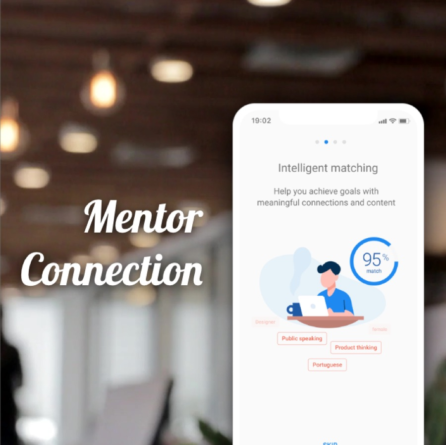

I design the systems that products are built on.
Blending platform thinking with user-centered strategy — currently leading developer experience and the App Store at Autodesk.

Autodesk App Marketplace Replatform
Reimagining how customers discover, evaluate, and adopt third-party apps across the ecosystem.
View case study →
App Marketplace Overview
Driving measurable ecosystem growth by telling the App Store's story to the developers who build on it.
View case study →
Mentor Connection
Intelligent matching and a guided framework that help mentors and mentees build trusted, lasting relationships — open to anyone.
View case study →
Field Alert
An offline-enabled mobile app that alerts field service engineers to severe weather — protecting crews and keeping work on schedule.
View case study →
Digital Asset Passport
A single source of truth for GE's managed assets — replacing fragmented legacy systems with one common data model.
View case study →
Emerging Tech Experiments
Design experiments for Digital Asset Passport — guided, conversational search that turns discussion into insight.
View case study →
WaitStaff Reviews App
A review platform focused on evaluating individual servers — not just restaurants — so great service gets recognized.
View case study →
Health Assessment App
A fun, personalized Health Assessment Tool for USANA — adopted in 19 countries and 8 languages.
View case study →
Stanford Healthcare
A responsive redesign giving patients a clear path to the right physician across a complex, content-heavy site.
View case study →Vision drives strategy; strategy drives the system.
I’m passionate about designing impactful products where vision drives strategy. I blend platform thinking with user-centered product strategy to build scalable ecosystems that meet both business and developer needs.
At Autodesk, I lead efforts to improve the end-to-end developer experience — helping external developers build with our APIs and distribute their solutions on the Autodesk App Store. With expertise across discovery and delivery, I thrive in cross-functional teams that value insight, collaboration, and continuous learning.
Let’s build something worth designing well.
To request my most recent work or start a conversation, reach out on LinkedIn.
Connect on LinkedIn →